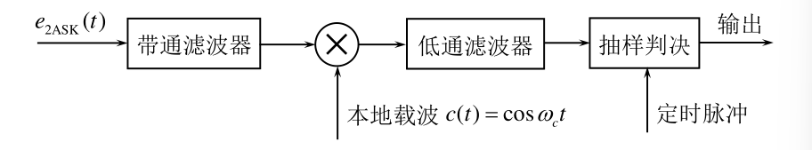
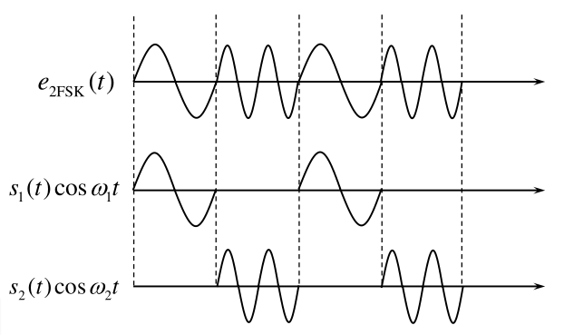

数字带通传输系统¶
二进制数字调制原理¶
调制信号是二进制数字基带信号时的调制称为二进制数字调制,把包括调制和解调过程的数字传输系统叫做数字带通传输系统
二进制振幅键控2ASK¶
利用载波的幅度变化来传递数字信息,而频率和初始相位保持不变
通-断键控\(OOK\)（\(On-Off Keying\)）
$$
e_{00K}(t)=
\begin{cases}A\mathrm{cos}\omega_\mathrm{c}t&\text{以概率 }P\text{ 发送“1” 时}\\0&\text{以概率 1 }-P\text{ 发送“0” 时}&
\end{cases}
$$

\(2ASK\)信号的一般表达式为 $$ e_{2\mathrm{ASK}}(t)=s(t)\mathrm{cos}\omega_{\mathrm{c}}t $$ 其中 $$ s(t)=\sum_{n}a_{n}g(t-nT_{_B}) $$ 比如通断键控\(OOK\)信号就取 $$ a_n= \begin{cases}1&\text{概率为 }P\\0&\text{概率为 }1-P& \end{cases} $$
产生方式:

解调方式:相干解调和非相干解调
与模拟信号相比,增加抽样判决器
非相干解调:

相干解调:
 $$ e_{2\mathrm{ASK}}(t)\cdot c(t)=s(t)\cos\omega_{c}t\cdot\cos\omega_{c}t=s(t)\cos^{2}\omega_{c}t=\frac{1}{2}s(t)+\frac{1}{2}s(t)\cos2\omega_{c}t $$ 低通滤波后输出\(\frac{1}{2}s(t)\)
{kind=link}
二进制频移键控2FSK¶
基本原理:利用载波的频率变化来传递数字信息,载波的频率随二进制基带信号在\(f_{1}\)和\(f_{2}\)间变化 $$ e_{2\mathrm{FSK}}(t)= \begin{cases}A\cos(\omega_1t+\varphi_n)&\text{发送“1”时}\\A\cos(\omega_2t+\theta_n)&\text{发送“0”时}& \end{cases} $$ 
{kind=link}
一个\(2FSK\)信号可以看成两个不同载频的2ASK信号的叠加,即 $$ e_{2\mathrm{FSK}}(t)=s_{1}(t)\cos(\omega_{1}t+\varphi_{n})+s_{2}(t)\cos(\omega_{2}t+\theta_{n}) $$ \(\varphi_n\)和\(\theta_n\)不携带信息,所以可简化为 $$ e_{2\mathrm{FSK}}(t)=s_{1}(t)\cos\omega_{1}t+s_{2}(t)\cos\omega_{2}t $$
产生方法:

解调方法:非相干解调和相干解调 鉴频法 差分检测法 过零检测法
非相干解调:

相干解调:

二进制相移键控2PSK¶
基本原理:利用载波的相位变化来传递数字信息,而振幅和频率保持不变
用初始相位\(0\)和\(\pi\)来表示1和0
表述为 $$ e_{2\mathrm{PSK}}(t)=\mathrm{Acos}(\omega_{\mathrm{c}}t+\varphi_{n}) $$ $$ \varphi_n=\left{\begin{array}{cc}0&\text{发送“0”时}\\\pi&\text{发送“1”时}\end{array}\right. $$ 或者 $$ e_{2\mathrm{PSK}}(t)=\begin{cases}\mathrm{Acos}\omega_{\mathrm{c}}t&\text{概率为 }P\\-\mathrm{Acos}\omega_{\mathrm{c}}t&\text{概率为 }1-P&\end{cases} $$ 或者 $$ e_{2\mathrm{PSK}}(t)=s(t)\cos\omega_{\mathrm{c}}t $$
产生方式:

解调方式:相干解调


180°的相位模糊度:若相干载波的相位反转180°,解调输出会完全翻转
解决:引入差分相移键控(DPSK)
二进制差分相移键控2DPSK¶
利用前后相邻码元的载波相对相位表示信息 $$ \Delta\varphi=\varphi_n-\varphi_{n-1}=\begin{cases}0&\text{编码"}0"\\pi&\text{编码"}1"&&\end{cases} $$ 编码规则\(b_n=a_n\oplus b_{n-1}\)
译码规则\(a_{n}=b_{n}\oplus b_{n-1}\)
产生方式:


解调方式:
相干解调＋码反变换

差分相干解调

二进制数字调制系统的功率谱密度¶
2ASK¶
其是单极性基带信号功率谱\(P_{s}(f)\)的线性搬移

主瓣带宽是基带信号带宽的2倍 $$ B_{2\mathrm{ASK}}=2f_{B}=\frac{2}{T_{B}}=2R_{B} $$
2ASK信号的功率谱含载波分量
2FSK¶

带宽近似为 $$ B_{2\mathrm{FSK}}=2f_{B}+\left|f_{2}-f_{1}\right|=\frac{2}{T_{B}}+\left|f_{2}-f_{1}\right|=2R_{B}+\left|f_{2}-f_{1}\right| $$
- 当载频差\(\left|f_2-f_1\right|>2f_B\)时，功率谱形状为双峰谱；
- 当载频差\(\left|f_2-f_1\right|<f_B\)时，功率谱形状为单峰谱
- 当载频差\(f_{_B}<\left|f_2-f_1\right|<2f_B\)时，功率谱形状为马鞍形
2PSK/2DPSK¶

主瓣带宽 $$ B_{\mathrm{2(D)PSK}}=2f_{B}=\frac{2}{T_{B}}=2R_{B} $$ \(2PSK/2DPSK\)信号的功率谱不含载波分量
二进制数字调制系统的抗噪声性能¶
性能指标:系统误码率\(P_{e}\)
分析前提条件
- 恒参信道,传输系数为\(K\)
- 带通滤波器等效带宽为\(B\)
- 噪声为加性高斯白噪声,单边功率谱密度\(\frac{n_0}{2}\),噪声功率 \(\sigma_n^2=n_0B\)
2ASK¶
- 相干解调:

输入信号 $$ s_\mathrm{T}(t)=\begin{cases}A\cos\omega_\mathrm{c}t&\text{发送“1”时}\\0&\text{发送“0”时}&\end{cases} $$ 信道输出信号 $$ y_{i}(t)=\begin{cases}a\cos\omega_{c}t+n_{i}(t)&\text{发送“1”时}\\n_{i}(t)&\text{发送“0”时}&\end{cases} $$ 窄带滤波后 $$ y(t)=\begin{cases}a\cos\omega_ct+n(t)&\text{发送“1”时}\\n(t)&\text{发送“0”时}&\end{cases} $$ 其中 $$ n(t)=n_c(t)\cos\omega_ct-n_s(t)\sin\omega_ct $$ 代入得 $$ y(t)=\begin{cases}\left[a+n_c(t)\right]\cos\omega_ct-n_s(t)\sin\omega_ct&\text{发送“1”时}\\n_c(t)\cos\omega_ct-n_s(t)\sin\omega_ct&\text{发送“0”时}&\end{cases} $$ 乘相干载波后 $$ y(t)\cdot2\cos\omega_ct=\begin{cases}\lefta+n_c(t)\right-n_s(t)\sin2\omega_ct&\text{发送“1”时}\\n_c(t)(\cos2\omega_ct+1)-n_s(t)\sin2\omega_ct&\text{发送“0”时}&\end{cases} $$ 低通滤波后 $$ x(t)=\begin{cases}a+n_c(t)&\text{发送“1”时}\\n_c(t)&\text{发送“0”时}&\end{cases} $$
所以 $$ f_{1}(x)=\frac{1}{\sqrt{2\pi}\sigma_{n}}\exp\left[-\frac{(x-a){2}}{2\sigma_{n}\exp\left[-\frac{x}}\right]\f_{0}(x)=\frac{1}{\sqrt{2\pi}\sigma_{n}{2}}{2\sigma_{n}\right] $$ 系统总误码率 $$ \begin{aligned}P_{e}&=P(1)P(0|1)+P(0)P(1|0)\\&=P(1)\cdot\int_{-\infty}}{b}f_{1}(x)\mathrm{d}x+P(0)\cdot\int_{b} $$ 最小时 $$ b}f_{0}(x)\mathrm{d}x\end{aligned*=\frac{a}{2}+\frac{\sigma_n2}{a}\ln\frac{P(0)}{P(1)} $$ 符号先验等概时 $$ b^*=\frac{a}{2} $$ 此时 $$ P_e=\frac{1}{2}erfc(\frac{a}{2\sqrt{2}\sigma_n}) $$ 而输入端信噪比 $$ r=\frac{a2}{2\sigma_n2} $$ 所以 $$ P_{e}=\frac{1}{2}erfc\left(\sqrt{\frac{r}{4}}\right) $$ 大信噪比时(r>>1) $$ P_{e}\approx\frac{1}{\sqrt{\pi r}}e^{-\frac{r}{4}} $$
- 包络检波:

输入信号 $$ s_\mathrm{T}(t)=\begin{cases}A\cos\omega_\mathrm{c}t&\text{发送“1”时}\\0&\text{发送“0”时}&\end{cases} $$ 信道输出信号 $$ y_{i}(t)=\begin{cases}a\cos\omega_{c}t+n_{i}(t)&\text{发送“1”时}\\n_{i}(t)&\text{发送“0”时}&\end{cases} $$
窄带滤波后 $$ y(t)=\begin{cases}a\cos\omega_ct+n(t)&\text{发送“1”时}\\n(t)&\text{发送“0”时}&\end{cases} $$ 其中 $$ n(t)=n_c(t)\cos\omega_ct-n_s(t)\sin\omega_ct $$ 代入得 $$ y(t)=\begin{cases}\left[a+n_c(t)\right]\cos\omega_ct-n_s(t)\sin\omega_ct&\text{发送“1”时}\\n_c(t)\cos\omega_ct-n_s(t)\sin\omega_ct&\text{发送“0”时}&\end{cases} $$ 包络检波器输出 $$ V(t)=\begin{cases}\sqrt{\left[a+n_{c}(t)\right]{2}+n_{s}}(t)}&\text{发送“1”时}\\\sqrt{n_{c{2}(t)+n_{s} $$ 所以 $$ f_0(V)=\frac{V}{\sigma_n}(t)}&\text{发送“0”时}&\end{cases2}e{-\frac{V2}{2\sigma_n2}}\quad \f_1(V)=\frac{V}{\sigma_n2}I_0\left(\frac{aV}{\sigma_n2}\right)e{-\frac{V2+a2}{2\sigma_n2}} $$ 系统总误码率 $$ \begin{aligned}P_{e}&=P(1)P(0|1)+P(0)P(1|0)\&=P(1)\cdot\int_{-\infty}{b}f_{1}(V)\mathrm{d}V+P(0)\cdot\int_{b} $$ 最佳判决门限 $$ b^*=\frac{a}{2} $$ 系统总误码率 $$ P_e=\frac{1}{4}erfc\left(\sqrt{\frac{r}{4}}\right)+\frac{1}{2}e^{-\frac{r}{4}} $$ 信噪比无限大时的误码率下界 $$ P_e\to\frac{1}{2}e^{-\frac{r}{4}} $$}f_{0}(V)\mathrm{d}V\end{aligned
2FSK¶
- 相干解调:

输入信号 $$ s_T(t)=\begin{cases}A\cos\omega_1t&\text{发送“1”时}\A\cos\omega_2t&\text{发送“0”时}&\end{cases} $$ 信道输出信号 $$ y_i(t)=\begin{cases}a\cos\omega_1t+n_i(t)&\text{发送“1”时}\\a\cos\omega_2t+n_i(t)&\text{发送“0”时}&\end{cases} $$ 窄带滤波后 $$ \left{\begin{array}{ll}y_{1}(t)=\left{\begin{array}{ll}a\cos\omega_{1}t+n_{1}(t)&\text{发送“1”时}\n_{1}(t)&\text{发送“0”时}\end{array}\right.\\y_{2}(t)=\left{\begin{array}{ll}n_{2}(t)&\text{发送“1”时}\a\cos\omega_{2}t+n_{2}(t)&\text{发送“0”时}\end{array}\right.\end{array}\right. $$ 其中 $$ \begin{cases}n_1(t)=n_{1c}(t)\cos\omega_1t-n_{1s}(t)\sin\omega_1t\n_2(t)=n_{2c}(t)\cos\omega_2t-n_{2s}(t)\sin\omega_2t&\end{cases} $$ 发送\(1\)时,代入得 $$ \begin{cases}y_{1}(t)=a\cos\omega_{1}t+n_{1}(t)=\left[a+n_{1c}(t)\right]\cos\omega_{1}t-n_{1s}(t)\sin\omega_{1}t\\y_{2}(t)=n_{2}(t)=n_{2c}(t)\cos\omega_{2}t-n_{2s}(t)\sin\omega_{2}t&\end{cases} $$ 乘相干载波后 $$ \begin{cases}y_1(t)\cdot2\cos\omega_1t=a+n_{1c}(t)-n_{1s}(t)\sin2\omega_1t\\y_2(t)\cdot2\cos\omega_2t=n_{2c}(t)(\cos2\omega_2t+1)-n_{2s}(t)\sin2\omega_2t&\end{cases} $$ 发送\(0\)时同理
低通滤波后 $$ \begin{cases}x_1(t)=a+n_{1_c}(t)\sim N(a,\sigma_n^2)\x_2(t)=n_{2_c}(t)\sim N(0,\sigma_n^2)&\end{cases} $$ 所以 $$ f_{x1}(x)=\frac{1}{\sqrt{2\pi}\sigma_{n}}\exp\left[-\frac{(x-a){2}}{2\sigma_{n}\exp\left[-\frac{x}}\right]\f_{x2}(x)=\frac{1}{\sqrt{2\pi}\sigma_{n}{2}}{2\sigma_{n}\right] $$ 系统误码率 $$ P_{e}=\frac{1}{2}erfc(\frac{a}{\sqrt{2}\sigma_{z}})\overset{\sigma_{z}}{2}=2\sigma_{n}{\operatorname}{\operatorname\right)\overset{r=\frac{a}}}P_{e}=\frac{1}{2}erfc\left(\frac{a}{2\sigma_{n}{2}}{2\sigma_{n}{\operatorname}}{\operatorname\right) $$ 大信噪比时(}}}P_{e}=\frac{1}{2}erfc\left(\sqrt{\frac{r}{2}\(r>>1\)) $$ P_e\approx\frac{1}{\sqrt{2\pi r}}e^{-\frac{r}{2}} $$
- 包络检波

发送\(1\)时,代入得 $$ \begin{cases}y_{1}(t)=a\cos\omega_{1}t+n_{1}(t)=\left[a+n_{1c}(t)\right]\cos\omega_{1}t-n_{1s}(t)\sin\omega_{1}t\\y_{2}(t)=n_{2}(t)=n_{2c}(t)\cos\omega_{2}t-n_{2s}(t)\sin\omega_{2}t&\end{cases} $$ 包络检波后 $$ V_1=\sqrt{\begin{bmatrix}a+n_{1c}(t)\end{bmatrix}2+n_{1s}2(t)} $$
误码率 $$ P_e=\frac{1}{2}e^{-\frac{r}{2}} $$
2PSK¶
- 相干解调:

输入信号 $$ s_T(t)=\begin{cases}A\cos\omega_ct&\text{发送“1”时}\-A\cos\omega_ct&\text{发送“0”时}&\end{cases} $$ 信道输出信号 $$ y_i(t)=\begin{cases}a\cos\omega_ct+n_i(t)&\text{发送“1”时}\\-a\cos\omega_ct+n_i(t)&\text{发送“0”时}&\end{cases} $$ 窄带滤波后 $$ y(t)=\begin{cases}a\cos\omega_ct+n(t)\quad\text{发送“1”时}\\-a\cos\omega_ct+n(t)\quad\text{发送“0”时}&\end{cases} $$ 其中 $$ n(t)=n_c(t)\cos\omega_ct-n_s(t)\sin\omega_ct $$ 代入得 $$ y(t)=\begin{cases}\left[a+n_{c}(t)\right]\cos\omega_{c}t-n_{s}(t)\sin\omega_{c}t\quad\text{发送“1”时}\\\left[-a+n_{c}(t)\right]\cos\omega_{c}t-n_{s}(t)\sin\omega_{c}t\quad\text{发送“0”时}&\end{cases} $$ 乘相干载波后 $$ y(t)\cdot2\cos\omega_ct=\begin{cases}\lefta+n_c(t)\right-n_s(t)\sin2\omega_ct\quad\text{发送“1”时}\\\left-a+n_c(t)\right-n_s(t)\sin2\omega_ct\quad\text{发送“0”时}&\end{cases} $$ 低通滤波后 $$ x(t)=\begin{cases}a+n_c(t)\sim N(a,\sigma_n^2)&\mathrm{\text{发送“1”时}}\\-a+n_c(t)\sim N(-a,\sigma_n^2)&\mathrm{\text{发送“0”时}}&\end{cases} $$ 所以 $$ \begin{gathered}f_{1}(x)=\frac{1}{\sqrt{2\pi}\sigma_{n}}\exp\left[-\frac{\left(x-a\right){2}}{2\sigma_{n}\exp\left[-\frac{\left(x+a\right)}}\right]\f_{0}(x)=\frac{1}{\sqrt{2\pi}\sigma_n2}{2\sigma_n2}\right]\end{gathered} $$ 系统误码率 $$ \begin{aligned}P_{e}&=P(1)P(0|1)+P(0)P(1|0)\&=P(1)\cdot\int_{-\infty}{b}f_{1}(x)\mathrm{d}x+P(0)\cdot\int_{b} $$ 最佳判决门限 $$ b}f_{0}(x)\mathrm{d}x\end{aligned*=\frac{\sigma_n2}{2a}\ln\frac{P(0)}{P(1)} $$ 符号先验等概时 $$ b^{*}=0 $$ 代入得 $$ P_e=\frac{1}{2}erfc(\frac{a}{\sqrt2\sigma_n}) $$ 根据输入信噪比\(r=\frac{a^2}{2\sigma_n^2}\) $$ P_e=\frac{1}{2}erfc(\sqrt{r}) $$ 大信噪比时(\(r>>1\)) $$ P_{e}\approx\frac{1}{2\sqrt{\pi r}}e^{-r} $$
2DPSK¶
相干解调＋码反变换 $$ P_{e}^{\prime}\approx2P_{e}=\frac{1}{\sqrt{\pi r}}e^{-r} $$ 差分相干解调 $$ P_e=\frac{1}{2}e^{-r} $$
二进制数字调制系统的性能比较¶

-
可靠性
信噪比一定时 $$ P_{e-2\mathrm{PSK}}<P_{e-2\mathrm{DPSK}}<P_{e-2\mathrm{FSK}}<P_{e-2\mathrm{ASK}}\\P_{e\text{相干}}<P_{e\text{非相干}} $$
-
有效性:带宽和频带利用率
-
对信道变化的敏感性
\[ 2FSK<2PSK<2ASK \] -
设备复杂度
非相干解调的设备复杂度低于相干解调。这是因为相干解调需要提取相干载波，故设备相对复杂，成本更高。
多进制调数字调制原理¶
概述¶
比特率\(R_{_{b}}\)给定时，增大调制进制数\(M\) ,可降低符号率\(R_{_{B}}\),从而降低信号带宽，节约传输资源。
数据率\(R_{_{B}}\)给定时，增大调制进制数\(M\),可以提高比特率\(R_{_{b}}\),从而提高频带利用率\(\eta_b\) 。
代价:判决范围减小引起的系统误码率增加,以及系统复杂度的增加。
多进制振幅键控MASK¶
振幅有\(M\)种取值
表达式： $$ e_{\mathrm{MASK}}(t)=s(t)\cos\omega_ct $$
$$ s(t)=\sum_na_ng(t-nT_B),a_n=\begin{cases}0,&\text{概率}P_1\1,&\text{概率}P_2\\cdots\cdots\M-1,&\text{概率}P_M&&\end{cases},\sum_{i=1}^MP_i=1 $$ 产生：
{kind=link}
解调：\(MASK\)的 解 调 方 法 与 \(2ASK\)相似,有相干非相干两种 解调方法但在结尾需添加“M-2电平转换”环节。
功率谱： $$ B_{\mathrm{MASK}}=\frac{2R_b}{\log_2M} $$
多进制频移键控MFSK¶
频率有\(M\)种取值
表达式： $$ e_{\mathrm{MFSK}}(t)=\sum_nAg(t-nT_B)\cos(\omega_ct+2\pi i\Delta ft) $$
产生与解调：

功率谱： $$ B_{\mathrm{MFSK}}=\frac{2}{T_B}+\left|f_M-f_1\right|=2R_B+\left|f_M-f_1\right| $$
多进制相移键控MPSK¶
一般讨论正交相移键控\(4PSK/QPSK\)
相位有\(M\)种取值
表达式：


产生：正交调相法：\(QPSK\)信号可以视为两路正交的\(2PSK\)信号合成。

{kind=link}
解调：


功率谱： $$ B_{\mathrm{MASK}}=\frac{2R_b}{\log_2M} $$ 缺点：
- 载波存在\(90°\)的相位模糊度。
- 最大相位跳变大，旁瓣对邻道干扰大。
多进制差分相移键控MDPSK¶
一般讨论四进制差分相移键控\(4DPSK/QDPSK\)
振幅有\(M\)种取值
表达式：
产生：
解调：
多进制数字调制系统的抗噪声性能¶
留空:\(MASK\)和\(MFSK\)的抗噪声性能分析
相干解调时，\(MPSK\)和\(MDPSK\)的误码率 $$ P_{e-\mathrm{MPSK}}=erfc\left(\sqrt{r}\sin\frac{\pi}{M}\right) $$
数字调制系统总结¶
创建日期: 2025-05-26
作者: